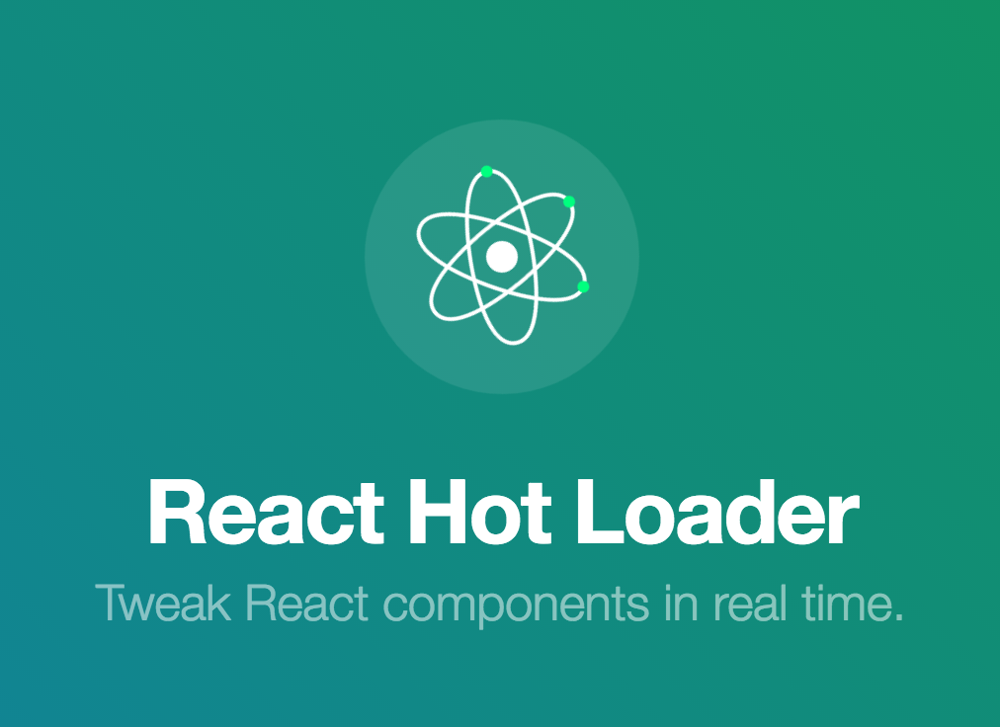

První dev stack
Hlavním hrdinou dnešního článku se stane bundlovací nástroj webpack. Lecos jste se o něm mohli dozvědět už v minulém článku. S jeho pomocí postavíme první jednoduchou "Hello world" aplikaci v Reactu, která bude například používat Babel (JavaScript budoucnosti) a LESS (CSS preprocesor). Ukážeme si sílu moderních JS nástrojů v praxi.
Výsledek
Protože určitě nemáte rádi překvapení, tak vám hned v úvodu ukážu k čemu se na konci tohoto článku dopracujeme. Výsledkem bude triviální 100% JavaScriptová aplikace s jedinou React komponentou. Jakékoliv úpravy v ní, či přiloženém LESSu se po uložení v editoru okamžitě projeví na stránce. Bez refreshnutí, prosím pěkně!

Očekávání
Doufám, že se vám demo líbilo. Na první pohled se možná nezdá jako kdoví co, ale vězte, že pod jeho pokličkou toho bublá daleko více. Běží totiž na moderním JS dev stacku, což je soubor různých knihoven, technik a nastavení. Je to základová deska pro náš rodinný baráček. Avšak s menší úpravou by zvládla unést i velký hrad. Co tedy od ní čekat? Jaké jsou naše požadavky?
Chceme:
- programovat v Babelu, protože je to lepší JavaScript
- budovat velkou a škálovatelnou aplikaci → chceme maximální modularitu
- mít možnost jednoduše integrovat a používat 150 000 balíčků z npm
- používat nějaký šikovný CSS preprocesor, třeba LESS, do budoucna pak možná postprocesor
- po každé změně v JS i CSS ihned vidět výsledek v prohlížeči, ideálně bez refreshnutí
- mít na očích chybové hlášení v přehledné formě
- mít 2 módy: vývojový a produkční
- v produkčním módu všechny potřebné JS soubory (moduly) sloučit do jednoho a minimalizovat, obdobně i pro kaskádové styly
- v produkčním módu ignorovat warningy a jiné debugovací výpisy
- mít kód kontrolovaný linterem, aby zůstal pěkný a jednotný
- aby po prvotním nastavení všechno fungovalo automaticky
Celkem dlouhý a náročný seznam, že? Na druhou stranu jsme programátoři, náš čas je drahý a investice do ladění vývojářského procesu se nám bohatě vrátí. Chtějme pro sebe vždy to nejlepší. Ale nebojte, nemusíte si kvůli tomu vyprázdnit kalendář na příští 3 měsíce. Sfoukneme to raz dva.

Stack pro tento článěk jsem samozřejmě nezačal budovat na zelené louce, ale pomohl si již existujícími řešeními. Pro naše účely jsem stáhnul github.com/steida/este a vyházel z něho vše, co nepotřebujeme. Smazal jsem asi 90% repozitáře a zbylo jen nastavení webpacku aneb základní esence dev stacku. Stack z tohoto článku je však stále použitelný i pro reálné nasazení. Není to jen nějaká nevyzkoušená hračka. Chybí v něm ale ukázky návrhového vzoru Flux, server-side rendering, lokalizace a vůbec všechny patterny a techniky. Pokud je chcete prostudovat už dnes, pusťte se do originálu. Nebo si počkejte na další články.
Webpack
Už jsem o něm básnil v předchozím článku. Pro jeho docenění je nejdříve potřeba pojmenovat zásadní problém, kterému vývojáři webových aplikací čelí. Naše aplikace (zdrojové kódy) jsou distribuovány pomocí pomalého a nespolehlivého protokolu HTTP do vzdáleného prohlížeče. Tam se musí ihned zparsovat, spustit a něco provést. Velikost naší aplikace je tedy velmi limitovaná, pokud nechceme uživatele ztratit nekonečnou bílou stránkou. Aby vše fungovalo svižně, musíme co nejvíce omezit počet HTTP requestů a minimalizovat jejich velikost.

Jinými slovy musíme velmi pečlivě zvážit, co a kdy do prohlížeče posílat a po jakých částech. U spousty aplikací nám bude stačit to, když všechny naše skripty spojíme do jednoho souboru bundle.js. Ovšem takový soubor může časem nepřijemně nabobtnat. Jak to vyřešit? Každá část (stránka) naší aplikace potřebuje pravděpodobně různé skripty a tak můžeme dle URL adresy posílat speciální menší bundly, kde bude jen to, co daná stránka skutečně potřebuje. Kód, který používají všechny stránky (typicky knihovna jako jQuery či React), pak dáme do <script src="common.js">, který bude všude - využijeme tak cache prohlížeče. To samé můžeme udělat s CSS. Obrázky pak můžeme vhodně cacheovat (verzovat) a ty, které mají jen pár kB, rovnou vložit zakódované do HTML jako base64 - ušetříme tak další drahocenné requesty. To zní jako hodně otravné práce, že?
Ano, to je hodně práce! Naštěstí existuje geniální webpack, který tohle vše dokáže vyřešit za nás. Jediné co musíme udělat my je explicitní uvádění závislostí. V hantýrce ES6 jde o import, v ES5 pak o require. U našich JS modulů to dělat musíme tak jako tak, ale ta převratná myšlenka webpacku spočívá v tom, že úplně stejným způsobem budeme uvádět (importovat) i CSS, obrázky, fonty a vlastně úplně cokoliv co daná stránka / komponenta / balíček potřebuje ke svému životu.
Webpack pak projde všechny soubory (importy) a sestaví komplexní graf závislostí. Ještě mu musíme ukázat, kde začít, co ignorovat, čím jednotlivé formáty zpracovat (loadery) a jaký od něho očekáváme výstup (jeden velký bundle, více menších bundlů ...). Výstup pak bude 100% optimální. Každá část aplikace dostane "na cestu" jen to co skutečně potřebuje a nic zbytečně navíc. Hurá!
Webpack má obsáhlou dokumentaci, která je ale trochu nepřehledná. Můžete také nahlédnout do hezkého shrnutí od Pete Hunta. Nejlepší ale je použít již nějaký hotový boilerplate a na něm experimentovat. Webpack je velký a mocný nástroj, který je zároveň i extrémně modulární díky loaderům a pluginům. Není však úplně snadné ho nastavit.
Hot module replacement
Ještě si dovolím jednu malou kecací odbočku, protože pěvně věřím, že v blízké budoucnosti to bude velká věc! Jde o další skvělou funkci webpacku. Slouží čistě vývojářům během vývoje aplikace. Jde o hot module replacement. Je to cesta, kterou je možné vyměňovat, přidávat a mazat moduly již v běžící aplikaci. Změny se pak na stránce projeví okamžitě bez reloadu.
Proč je to tak převratné? Ohromně to zrychluje a zpříjemňuje vývoj. Refresh je nejen pomalý ale hlavně se při něm ztrácí stav aplikace. Například rozepsaný formulář nebo posloupnost kroků, kterou jste se dostali do nějaké skryté části aplikace (nedostupné přes URL).
Jak tahle magie funguje? Webpack-dev-server si pomocí socketů povídá s webpack runtime (přiložený bundle k hlavnímu skriptu stránky) a oznámí mu, když uložíte (aktualizujete) nějaký soubor. Webpack runtime se pak zeptá původního starého modulu, jestli umí zpracovat aktualizaci, pokud ne, tak jde tato výzva stromem závislostí výše. Pokud se nenajde nikdo, kdo by aktualizaci dokázal provést, tak se udělá klasický refresh. Musíme psát ke každému modulu potenciálně velmi komplikovanou accept metodu?

To by nikdo nedělal. Naštěstí pro React komponenty je to možné vcelku snadno generalizovat. Mají totiž jasně daný life-cycle a rerendrování části DOMu bez ztráty state je jejich základní vlastností. A tak vzniknul react-hot-loader. Pro UI část je hot reload nejvíce užitečný, jelikož právě ji nejčastěji testujeme a právě ona obsahuje stav. Nicméně při jistých konvencích se dá celý flux reimplementovat tak, aby bylo možné hot reload použít pro celou aplikaci, jak ukazuje redux. Taková aplikace je pak shodou okolností i velmi dobře testovatelná.
Dnes představuje hot reload černou magii, která funguje, ale jde z ní respekt. Dovedu si však představit, že příští rok, už budeme knihovny dělit na ty, které hot reload podporují a ty které nikoliv. Hackování v JS bude ještě víc zábavné než dnes!
Struktura aplikace
dev-stack/ ← hlavní adresář
├── build/ ← produkční (vybuildněná) verze
├── node_modules/ ← NPM balíčky (závislosti projektu)
├── src/ ← zdrojové kódy
│ ├── client/ ← front-end (FE) / prohlížečová část
│ │ └── hello.gif ← velký obrázek (>8kB)
│ │ └── icon.png ← malý obrázek (<8kB)
│ │ └── index.js ← hlavní (vstupní) soubor FE části
│ │ └── main.js ← hlavní root React komponenta
│ │ └── main.less ← CSS styly pro hlavní komponentu
│ ├── server/ ← serverová část (node.js)
│ │ └── config.js ← konstanty a konfigurace
│ │ └── html.js ← komponenta se strukturou HTML stránky
│ │ └── index.js ← hlavní (vstupní) soubor serveru
│ │ └── main.js ← HTTP server
├── webpack/ ← nastavení webpacku
│ └── build.js ← build produkční verze
│ └── devserver.js ← webpack-dev-server pro vývoj
│ └── makeconfig.js ← společná hlavní konfigurace
│ └── notifyplugin.js ← šikovný nástroj pro notifikace OS
├── gulpfile.js ← konfigurace Gulpu
└── package.json ← rodokomnen aplikace, závislosti atd.Obsah souboru package.json:
{
"name": "prvni-dev-stack",
"description": "Zakladni a jednoduchy dev-stack pro moderni JS aplikaci",
"author": "Vojtech Miksu",
"version": "0.0.1",
"private": true,
"scripts": {
"start": "node src/server"
},
"dependencies": {
"autoprefixer-loader": "^2.0.0",
"babel": "^5.0.8",
"babel-core": "^5.6.5",
"babel-eslint": "^3.0.1",
"babel-loader": "^5.0.0",
"compression": "^1.4.0",
"css-loader": "^0.15.1",
"eslint": "^0.23.0",
"eslint-plugin-react": "^2.0.1",
"express": "^4.11.2",
"extract-text-webpack-plugin": "^0.8.0",
"file-loader": "^0.8.4",
"gulp": "^3.8.10",
"gulp-bg": "0.0.5",
"gulp-eslint": "^0.14.0",
"gulp-util": "^3.0.2",
"less": "^2.5.1",
"less-loader": "^2.0.0",
"node-libs-browser": "^0.5.2",
"node-notifier": "^4.1.0",
"react": "^0.13.1",
"react-hot-loader": "^1.1.4",
"style-loader": "^0.12.0",
"url-loader": "^0.5.5",
"webpack": "^1.9.5",
"webpack-dev-server": "^1.7.0",
"yargs": "^3.12.0"
}
}Po jeho uložení zavolejte:
npm installVšechny potřebné závislosti se vám tímto nainstalují do node_modules/.
Server
I přesto, že naše aplikace a veškerá její logika může kompletně běžet pouze v prohlížeči, pořád nám jí někdo musí do toho prohlížeče naservírovat. Potřebujeme server. Pro to úplně nejjednodušší použití potřebujeme od serveru to, aby nám vrátil základní HTML strukturu s prázdným <body /> a naší JS aplikací <script src="build/bundle.js">. Dále ještě potřebujeme, aby se ve vývojovém módu nahradil hotový build/bundle.js za webpack-dev-server <script src="//localhost:8888/build/app.js">.
Takový server může být v PHP, Pythonu, Javě či vašem oblíbeném jazyce XXX. Asi vás úplně nepřekvapí, že my šáhneme opět po JavaScriptu a to node.js. Mít prohlížečovou část, serverovou část a nástroje včetně jejich nastavení v jednom jazyce nabízí řadu výhod. Je snadné sdílet stejný kód (router, validace). Lze jednoduše přepínat mezi produkčním a vývojovým režimem. To jsou takové příjemné bonusy. Pak se nabízí ale i možnost server-side renderování Reactu, kterou už bez node.js nemáte. Tu však zatím rozebírat nebudeme.
Jelikož se tato série soustředí především na tu prohlížečovou část, tak se samotným nodem moc zabývat prozatím nebudeme. Ostatně existuje už i český node.js seriál, i když už trochu zastaralý.
Hlavní soubor index.js vypadá takto:
require('babel/register');
require('./main');Pokud chceme používat Babel v prohlížeči, musíme nejdříve náš kód prohnat Babel kompilátorem a prohlížeči poslat až výsledný JavaScript. V prostředí node.js můžeme udělat to samé. Nicméně díky tomu, že nemusíme řešit spojování modulů, minimalizaci a prohlížeče, tak existují i další možnosti. Například lze místo node používat babel-node. Pro spuštění serveru pak použijete příkaz babel-node index místo node index. Další a elegantní možností je výše použitý require hook require('babel/register'). Babel se nabinduje na nodí require a bude kompilovat soubory za běhu (počínaje ./main.js).
Soubor main.js je už zajímavější:
import React from 'react';
import express from 'express';
import compression from 'compression';
import config from './config';
import Html from './html';
const app = express();
app.use(compression());
app.use('/build', express.static('build'));
app.get('*', (req, res) => {
res.send('<!DOCTYPE html>' + React.renderToStaticMarkup(
<Html
isProduction={config.isProduction}
version={config.version}
/>
));
});
app.listen(config.port);
console.log(`Server started on port ${config.port}`);Představuje totiž celý server. Nepotřebujeme už Apache či Nginx, protože node umí obstarat HTTP komunikaci sám. Express je nejpoužívanější node framework, se kterým je hračka napsat například jakékoliv API.
Nám stačí pouze jedno pravidlo. V metodě app.get říkáme, že na jakoukoliv adresu nám má server poslat daný řetězec, který reprezentuje naší prázdnou HTML stránku. Tedy krom adresáře /build, ve kterém budeme mít naše bundly či obrázky.
Trošku jsem v úvodu lhal o té jediné React komponentě. Tady je totiž druhá s názvem Html. React.renderToStaticMarkup vrátí DOM v podobě prostého řetězce. Existuje ještě metoda React.renderToString, která vrací to samé, avšak každý element dostane ještě speciální atribut data-reactid. To se hodí pro server-side rendering. Po té co se takováto komponenta vykreslí v prohlížeči, React už bude mít díky idčkům kompletní přehled o struktuře DOMu a může se na ní ihned napojit. To však pro elementy jako <head> či <body> nepotřebujeme, jelikož na ty React už nikdy šahat nebude.
Než přejdeme na rozbor naší první reactí komponenty, mrkněme na config.js:
export default {
isProduction: process.env.NODE_ENV === 'production',
port: process.env.PORT || 8000,
version: require('../../package').version
};Režim vyčteme z globální proměnné process.env.NODE_ENV, jak už je u nodu zvykem. Obdobně můžeme v prostředí nastavit i PORT, jinak se použije 8000. Také se nám hodí version, který si můžeme vyzobnout z našeho vlastního package.json. Následně ho totiž přilepíme k build/bundle.js?v=version, abychom si s každou novou verzí vynutili invalidování prohlížečové cache. Obdobně pro CSS.
Poslední dílek skládanky je samotná struktura stránky v Reactu html.js:
import React from 'react';
export default class Html extends React.Component {
render() {
const {isProduction, version} = this.props;
const appSrc = isProduction ? `/build/app.js?v=${version}`
: '//localhost:8888/build/app.js';
return (
<html>
<head>
<meta charSet="utf-8" />
<title>Prvni dev-stack</title>
{isProduction &&
<link href={`/build/app.css?v=${version}`} rel="stylesheet"/>}
</head>
<body>
<div id="app-root" />
<script src={appSrc} type="text/javascript"/>
</body>
</html>
);
}
}
Html.propTypes = {
isProduction: React.PropTypes.bool.isRequired,
version: React.PropTypes.string.isRequired
};React si více popíšeme až v dalším článku. Zde jen uvedu, že ve vývojovém režimu nevkládáme CSS soubor pomocí <link>, ale děje se tak javascriptovou cestou, aby nám mj. fungoval hot reload. Zbytek je ona prázdná HTML struktura, vložení naší budoucí JS aplikace a také prázdný div s id="app-root", do kterého v prohlížeči vyrendrujeme naši Reactí aplikaci. Nikdy jí nerendrujte přímo do body elementu, jelikož do něj rádi svévolně šahají i různé další knihovny, což pak způsobuje Reactu značný bolehlav.
Server si nyní můžete pustit příkazem:
node indexV produkčním režimu pak jako:
NODE_ENV=production node indexNyní si otevřte Chrome a mrkněte na http://localhost:8000. Měli byste tam nalézt velké bíle nic - právě to jsme si totiž zatím vytvořili. Zda jde o dobré nic, zkontrolujte nahlédnutím do zdrojového kódu stránky.
Front-end
Naše dnešní aplikace bude triviální. Vytvoříme si jedinou React komponentu, která nám vypíše "Hello world!". Také do ní přidáme pár obrázků a styly, abychom si ukázali, jak funguje Webpack. Vstupní bod aplikace index.js vypadá takto:
import React from 'react';
import Main from './main';
const app = document.getElementById('app-root');
React.render(<Main />, app);V DOMu si vylovíme div, do kterého pak vyrendrujeme naši jedinou hlavní komponentu Main. Děsí vás ty špičaté závorky? Říkáte si, že to není validní JS syntax? Ano, není. Nicméně Babel dané syntaxi rozumí (JSX) a překládá jí do normálních JS funkcí. Jediné co musíte pro použití JSX udělat je import Reactu. O JSX bude také článek později.
Samotná Main komponenta není o moc složitější:
import React from 'react';
import './main.less';
import imgHello from './hello.gif';
import imgIcon from './icon.png';
export default class Main extends React.Component {
render() {
return (
<div className="hello">
Hello world!
<img src={imgHello} width="300px"/>
<img src={imgIcon} />
</div>
);
}
}Povšimněte si, že kromě povinného Reactu importujeme i soubor s LESS (stylopis pro naši komponentu s className hello) a dokonce i obrázky. Potřeba minimalizace a mazání nepoužívaných CSS je asi všem jasná. Proč se ale zaobírat obrázky, když ty se nahrávají asynchronně a jen když jsou potřeba i bez nějakého webpacku?
- Obrázky menší než např. 8kB můžeme automaticky enkódovat do base64 a vložit přímo do HTML. Tím ušetříme zbytečný HTTP request.
- Pojmenování. Webpack obrázky přejmenuje na jejich hash a přesune do společného
/buildadresáře. Prohlížeč je tak může cacheovat "navždy", pokud se změní, tak se změní i jejich název. - Lepší struktura a opravdová modularita. Obrázky totiž můžeme mít přímo u jednotlivých komponent, aniž bychom veřejně odhalovali strukturu naší aplikace. Stejně jako styly a vše ostatní.
Pokud se vám nelíbí představa, že byste museli všechny obrázky uvádět přes import, nezoufejte. Webpack umí poznat a vytáhnout název importu i přímo ze src="", když si to nastavíte pomocí loader query.
Pro úplnou přehlednost ještě uvedu obsah souboru main.less:
.hello {
color: #ff0000;
font-size: 3em;
img {
display: block;
}
}Nastavení Gulpu
Už jsme hotoví s dnešní aplikací (serverem i front-endem). Zbývá však ještě konfigurace a uvedení k životu. Proč máme v projektu Gulp i Webpack zároveň? Je pravda, že Webpack do velké míry dokáže spousty činností Gulpu nahradit a s trochou skriptování v package.json bychom se Gulpu dokázali zbavit úplně. Nicméně bude se nám hodit pro samotné spouštění Webpacku a také ESLintu. ESLint má sice také vlastní loader pro webpack, ale v našem nastavení webpacku budeme potlačovat většinu (výstupů) errorů, aby se nám nerozbíjel (nepřerušoval) hot reloading. Bohužel s tím bychom přišli i o výstup ESLintu.
Základem konfigurace Gulpu je gulpfile.js:
/* eslint-env node */
'use strict';
var bg = require('gulp-bg');
var eslint = require('gulp-eslint');
var gulp = require('gulp');
var makeWebpackConfig = require('./webpack/makeconfig');
var webpackBuild = require('./webpack/build');
var webpackDevServer = require('./webpack/devserver');
var yargs = require('yargs');
var args = yargs
.alias('p', 'production')
.argv;
gulp.task('env', function() {
process.env.NODE_ENV = args.production ? 'production' : 'development';
});
gulp.task('build-webpack-production', webpackBuild(makeWebpackConfig(false)));
gulp.task('build-webpack-dev', webpackDevServer(makeWebpackConfig(true)));
gulp.task('eslint', function() {
return gulp.src([
'gulpfile.js',
'src/**/*.js',
'webpack/*.js'
])
.pipe(eslint())
.pipe(eslint.format())
.pipe(eslint.failOnError());
});
gulp.task('server',
['env', args.production ? 'build-webpack-production' : 'build-webpack-dev'],
bg('node', 'src/server')
);
gulp.task('default', ['server']);Musíme specifikovat jednotlivé tasky:
- env: nastaví prostředí na vývojový či produkční režim
- build-webpack-production: spustí produkční webpack (build)
- build-webpack-dev: spustí webpack-dev-server pro vývojový režim
- eslint: zkontroluje všechny naše soubory ESLintem, včetně webpack konfigurací a i gulpfilu, pravidla ESLintu si můžete nastavit přidáním souboru
.eslintrc - server: spustí task env a pak jeden z buildu dle parametru z příkazové řádky, na pozadí nám pak ještě spustí náš server, který jsme si výše napsali
- default: hlavní task
Vývojový režim pak pustíme pomocí:
gulpProdukční aplikaci (vybuildení) pro reálné nasazení spustíme tímto:
gulp -pESLint pak zapneme příkazem:
gulp eslintJe už na vás, kdy budete linter spouštět v rámci vašeho procesu. Doporučuji si lintování také nainstalovat do vašeho textového editoru, abyste o chybách věděli ihned a gulp task mít jen jako takovou pojistku. Podporovány jsou všechny běžné editory.
Nastavení Webpacku
To nejlepší nakonec. Dnešní pohádku završíme nastavením Webpacku, který naší aplikaci vdechne život. Webpack očekává, že mu prvním parametrem předáme konfiguraci. Tu naši si sestavíme v souboru makeconfig.js. Asi jste všimli, že tu dnes trochu míchám ES5 a ES6 (Babel). Pro konfiguraci samotných build nástrojů je jednodušší použít čistý (starý) JS. Navíc ES5 je subset ES6 (Babelu), takže si stejně musíte zvyknout na obě syntaxe. Samotné zdrojové kódy budou téměř vždy jen v Babelu, občas uvedu (formou záložky) i starší zápis.
Konfiguraci si obalíme do funkce, které předáme to, zda chceme verzi pro produkci či vývoj:
module.exports = function(isDevelopment) {
// ...
}Konfigurace je jeden velký objekt:
var config = {
cache: isDevelopment,
debug: isDevelopment,
devtool: isDevelopment ? 'eval-source-map' : '',
// ...
}Webpack agresivně cacheuje jednotlivé moduly a chunky, což výrazně zlepšuje rychlost inkrementálních buildů. To se nám samozřejmě velmi hodi pro vývoj. Debug nám nastaví loadery do debug režimu. Devtool nám nabízí různé možnosti pro nastavení source-map.
Dále musíme uvést vstupní bod naší aplikace:
var config = {
// ...
entry: isDevelopment ?
[
'webpack-dev-server/client?http://localhost:8888',
'webpack/hot/only-dev-server',
'./src/client/index.js'
] : [
'./src/client/index.js'
],
// ...
}V případě vývojového režimu musíme krom src/client/index.js uvést i webpack-dev-server, tak aby nám fungoval hot-reload.
Následně musíme specifikovat loadery pro jednotlivé typy importovaných souborů. Lze si je představit jako pipes z bashe. Dostanou obsah souboru, provedou nějakou transformaci a pošlou ji na výstup. Ovšem pozor, zpracovávají se zprava do leva.
var config = {
// ...
module: {
loaders: [{
loader: 'url-loader?limit=8192',
test: /\.(gif|jpg|png|woff|woff2|eot|ttf|svg)$/
}, {
loaders: isDevelopment ? [
'react-hot', 'babel-loader'
] : [
'babel-loader'
],
exclude: /node_modules/,
test: /\.js$/
},
{
loader: isDevelopment ?
'style-loader!' + lessLoaders
: ExtractTextPlugin.extract('style-loader', lessLoaders),
test: /\.(less)$/
}]
},
// ...
}Loaders nebo loader specifikuje, který loader pro dané pravidlo použít. Test je regexp, který určí z názvu importu (typicky přípony), zda se má daný loader použít. Pomocí exclude je pak možné vyloučit některé importy, což se hodí pro /node_modules.
První loader nám zpracovává obrázky. Pokud jsou menší než 8kB, tak je převede do base64. Vrátí pak URL adresu obrázku. Druhý loader se aplikuje na všechny JavaScriptové soubory. Prožene je babel transformací. Ve vývojovém režimu navíc ještě react hot loaderem, který nám přidá accept metody k React komponentám.
Poslední loader pak zpracovává LESS importy. lessLoaders je zkratkou pro:
css-loader!autoprefixer-loader?browsers=last 2 version!less-loaderNejdříve projde LESS import LESS transformací, následně autoprefixer-loaderem, který nám přidá prefixy nutné pro poslední 2 verze prohlížečů. Css-loader pak vyřeší importy url(...). A nakonec style-loader, který nám styly vloží do DOMu.
V produkčním režimu aplikujeme na výsledek ještě ExtractTextPlugin, který nám ze všech jednotlivých stylů vytvoří samostatný CSS soubor. V opačném případě jsou naše styly přímo inlinovány javascriptem, což může být pomalé a problematické u starších prohlížečů. Ovšem pro vývoj je to naopak fajn, bude nám fungovat hot-reload.
Webpack nyní ví co zpracovávat a pomocí jakých loaderů (transformací). Nyní mu ještě zbývá říct, jak má vypadat výstup:
var config = {
// ...
output: isDevelopment ? {
path: path.join(__dirname, '/build/'),
filename: 'app.js',
publicPath: 'http://localhost:8888/build/'
} : {
path: 'build/',
filename: 'app.js',
publicPath: 'build/'
},
// ...
}Naše aplikace je jednoduchá a proto nám stačí jeden výstupní společný bundle. Ten se uloží do adresáře /build. Krom app.js se nám tam pak objeví i obrázky a CSS bundle app.css. Ve vývojovém režimu nám skripty a styly bude servírovat přímo webpack-dev-server, který poběží na http://localhost:8888/.
Dále můžeme ještě v konfiguraci specifikovat pluginy, které dělají další úpravy a optimalizace společné pro všechny moduly:
var config = {
// ...
plugins: (function() {
var plugins = [
new webpack.DefinePlugin({
'process.env.NODE_ENV':
JSON.stringify(isDevelopment ? 'development' : 'production')
})
];
if (isDevelopment)
plugins.push(
NotifyPlugin,
new webpack.HotModuleReplacementPlugin(),
new webpack.NoErrorsPlugin()
);
else
plugins.push(
new ExtractTextPlugin('app.css', {allChunks: true}),
new webpack.optimize.DedupePlugin(),
new webpack.optimize.OccurenceOrderPlugin(),
new webpack.optimize.UglifyJsPlugin({compress: {warnings: false}})
);
return plugins;
})()
// ...
}V prohlížeči nemáme dostupnou proměnnou process.env.NODE_ENV a přesto by se nám tam občas hodilo rozlišit v jakém jsme módu. Není nic jednoduššího, než si jí hromadně nahradit webpackem.
Ve vývojovém módu pak musíme aplikovat webpack.HotModuleReplacementPlugin, aby nám fungoval hot-reload. webpack.NoErrorsPlugin pak bude ignorovat případné chyby v kódu, tak aby se nám nevypnul hot-reload. Po opravení chyby se daný kód znova hot-reloadne. NotifyPlugin je šikovná utilitka, která nám bude oznamovat errory v notifikačním centru našeho operačního systému. Podporuje Mac, Windows i Linux. notifyplugin.js obsahuje:
'use strict';
var notifier = require('node-notifier');
var path = require('path');
function getLocMessage(error, loc) {
var filePath = error.module.resource.split(path.sep);
return [
filePath[filePath.length - 1],
' at [',
loc.line,
',',
loc.column,
']'
].join('');
}
module.exports = function() {
this.plugin('done', function(stats) {
// TODO: Handle warnings as well.
var error = stats.compilation.errors[0];
if (!error) return;
var loc = error.error.loc;
var msg;
if (loc)
msg = getLocMessage(error, loc);
else if (error.message)
msg = error.message;
else
return;
notifier.notify({
title: 'Webpack Error',
message: msg
});
});
};V produkčním módu musíme specifikovat kam uložit poslepované CSS styly pomocí ExtractTextPlugin. webpack.optimize.DedupePlugin zkusí najít stejné či podobné soubory a vyhodit je z výsledného výstupu, tak aby se zmenšila celková velikost bundlu. webpack.optimize.OccurenceOrderPlugin je další optimalizace, která zmenší výsledný bundle. Nakonec ještě použijeme UglifyJsPlugin. Ten významně minimalizuje JavaScriptový kód a provede další optimalizace (trvá to).
Nakonec ještě řekneme webpacku, které defaultní přípony (typy souborů) má umět importovat i bez toho aniž bychom uvedli koncovku.
var config = {
// ...
resolve: {
extensions: ['', '.js', '.json']
}
// ...
}Nemusíme pak psát import 'foo.json', ale stačí import 'foo'.
Celý makeconfig.js včetně úvodních importů vypadá takto:
'use strict';
var ExtractTextPlugin = require('extract-text-webpack-plugin');
var NotifyPlugin = require('./notifyplugin');
var path = require('path');
var webpack = require('webpack');
var lessLoaders = 'css-loader!autoprefixer-loader?browsers=last 2 version!less-loader';
module.exports = function(isDevelopment) {
var config = {
cache: isDevelopment,
debug: isDevelopment,
devtool: isDevelopment ? 'eval-source-map' : '',
entry: isDevelopment ?
[
'webpack-dev-server/client?http://localhost:8888',
'webpack/hot/only-dev-server',
'./src/client/index.js'
] : [
'./src/client/index.js'
],
module: {
loaders: [{
loader: 'url-loader?limit=8192',
test: /\.(gif|jpg|png|woff|woff2|eot|ttf|svg)$/
}, {
loaders: isDevelopment ? [
'react-hot', 'babel-loader'
] : [
'babel-loader'
],
exclude: /node_modules/,
test: /\.js$/
},
{
loader: isDevelopment ?
'style-loader!' + lessLoaders
: ExtractTextPlugin.extract('style-loader', lessLoaders),
test: /\.(less)$/
}]
},
output: isDevelopment ? {
path: path.join(__dirname, '/build/'),
filename: 'app.js',
publicPath: 'http://localhost:8888/build/'
} : {
path: 'build/',
filename: 'app.js',
publicPath: 'build/'
},
plugins: (function() {
var plugins = [
new webpack.DefinePlugin({
'process.env.NODE_ENV':
JSON.stringify(isDevelopment ? 'development' : 'production')
})
];
if (isDevelopment)
plugins.push(
NotifyPlugin,
new webpack.HotModuleReplacementPlugin(),
new webpack.NoErrorsPlugin()
);
else
plugins.push(
new ExtractTextPlugin('app.css', {allChunks: true}),
new webpack.optimize.DedupePlugin(),
new webpack.optimize.OccurenceOrderPlugin(),
new webpack.optimize.UglifyJsPlugin({compress: {warnings: false}})
);
return plugins;
})(),
resolve: {
extensions: ['', '.js', '.json']
}
};
return config;
};Už jsme skoro u cíle. Zbývá si ukázat, co se skrývá v build.js:
'use strict';
var webpack = require('webpack');
var gutil = require('gulp-util');
module.exports = function(webpackConfig) {
return function(callback) {
webpack(webpackConfig, function(fatalError, stats) {
var jsonStats = stats.toJson();
var buildError = fatalError || jsonStats.errors[0] || jsonStats.warnings[0];
if (buildError)
throw new gutil.PluginError('webpack', buildError);
gutil.log('[webpack]', stats.toString({
colors: true,
version: false,
hash: false,
timings: false,
chunks: false,
chunkModules: false
}));
callback();
});
};
};Kód výše nám spustí webpack v produkčním režimu, odchytí a vypíše možné chyby. V případě úspěchu nám do pěkné tabulky vypíše, co se vygenerovalo, kam a jakou to má velikost.
Soubor devserver.js je dost podobný:
'use strict';
var gutil = require('gulp-util');
var webpack = require('webpack');
var WebpackDevServer = require('webpack-dev-server');
module.exports = function(webpackConfig) {
return function(callback) {
new WebpackDevServer(webpack(webpackConfig), {
contentBase: 'http://localhost:8888',
hot: true,
publicPath: webpackConfig.output.publicPath,
quiet: false,
noInfo: true,
stats: {
assets: false,
colors: true,
version: false,
hash: false,
timings: false,
chunks: false,
chunkModules: false
}
}).listen(8888, '0.0.0.0', function(err) {
if (err)
throw new gutil.PluginError('webpack-dev-server', err);
gutil.log('[webpack-dev-server]', 'localhost:8888/build/client.js');
callback();
});
};
};Spustí nám webpack ve vývojovém režimu. Avšak tentokrát je obalen webpack-dev-serverem, což je samostatný node.js server, který se postará o aktualizaci změn (assets během vývoje stahujeme z něj). Musíme jen specifikovat na jaké adrese a portu bude běžet a pak také ignorovat výpisy, kterými jinak mohutně spamuje terminál. gutil.PluginError nám pak odchytí chyby během kompilace a vypíše je do terminálu.
Celý dev-stack
A to je vše! Celý dev stack najdete v repozitáři této stránky v adresáři /examples. Z terminálu se k funkčnímu stavu můžete dopracovat touto sadou příkazů (předpokládá se, že máte nainstalovaný node a npm):
git clone git@github.com:tajo/javascript.git
cd javascript/examples/dev-stack
npm install
npm install -g gulp
gulpPo otevření prohlížeče na adrese http://localhost:8000 byste měli vidět to co je na úvodním gifu. Taktéž by měl fungovat hot-reload. Otevřte si konzoli. Ne vždy hot-reload funguje (u změn mimo React komponenty). V konzoli vám pak webpack napíše, že máte provést ruční reload stránky. Proč ho neděláme automaticky? Protože je to otravné. V praxi se pak stává, že si nechtíc něco uložíte, udělá se refresh a ztratí se vám stav. Prozkoumejte také tab Elements a mrkněte na to, jak vypadá výsledný DOM ve vývojovém a produkčním režimu.
Závěrem
Postavili jsme si jednoduchý, ale moderní JS dev-stack, který splňuje všechna očekávání vytyčená v úvodu. Nabízí nám pohodlný vývojový režim s hot-reloadem a bohatými výpisy (včetně source-map), které nám značně usnadní vývoj. V produkčním režimu nám pak webpack vytvoří maximálně optimalizovaný výstupní bundle s našimi skripty, styly a obrázky. Serverovou část naší aplikace jsme vyřešili v node.js. Základní HTML stránku si lze ale stejně dobře naservírovat i jakoukoliv jinou technologií, třeba Apachem s PHP. Příště si představíme React a konečně si něco naprogramujeme.